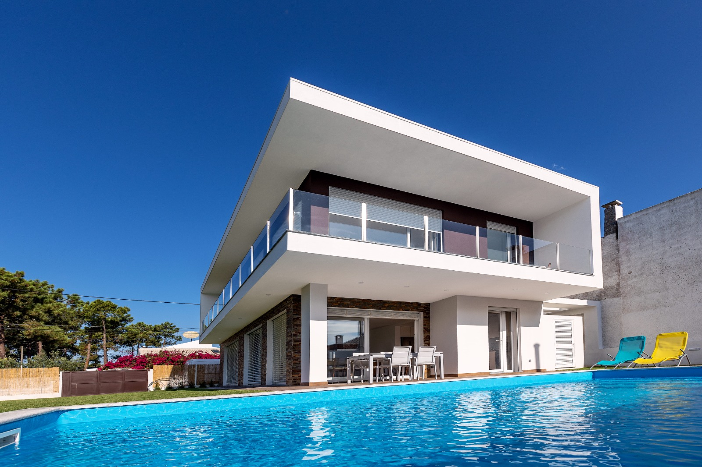
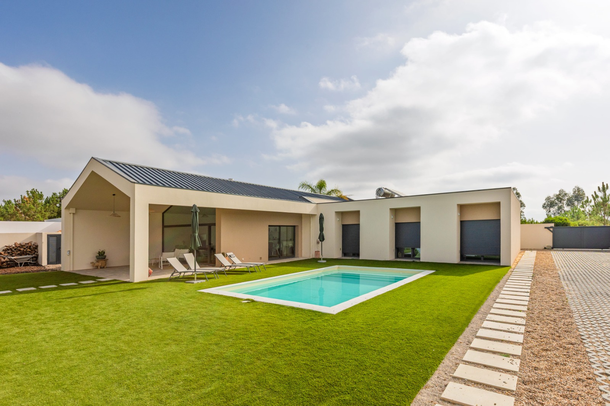
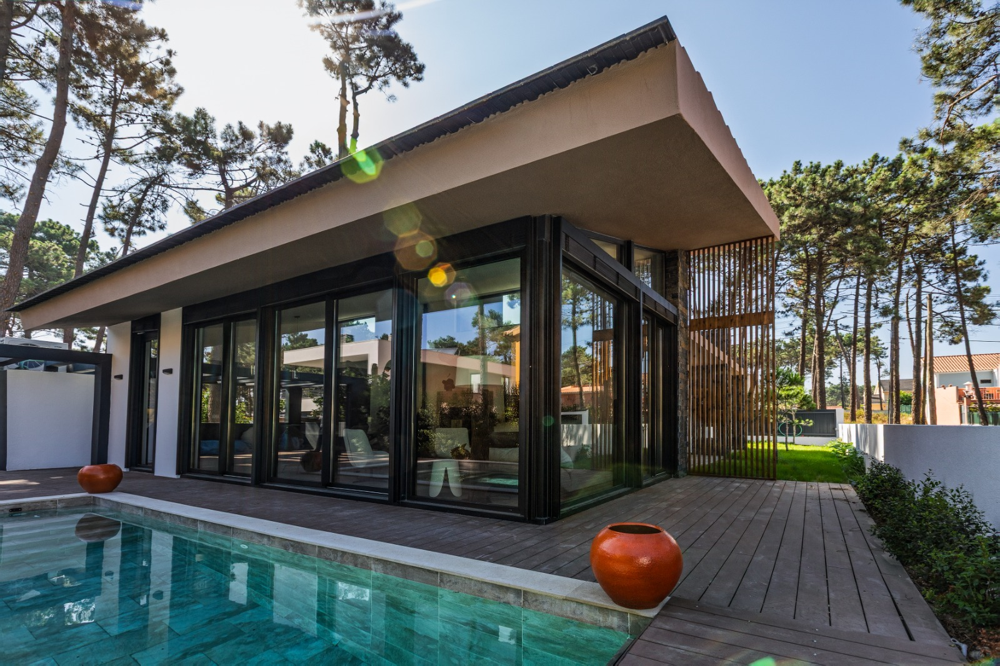
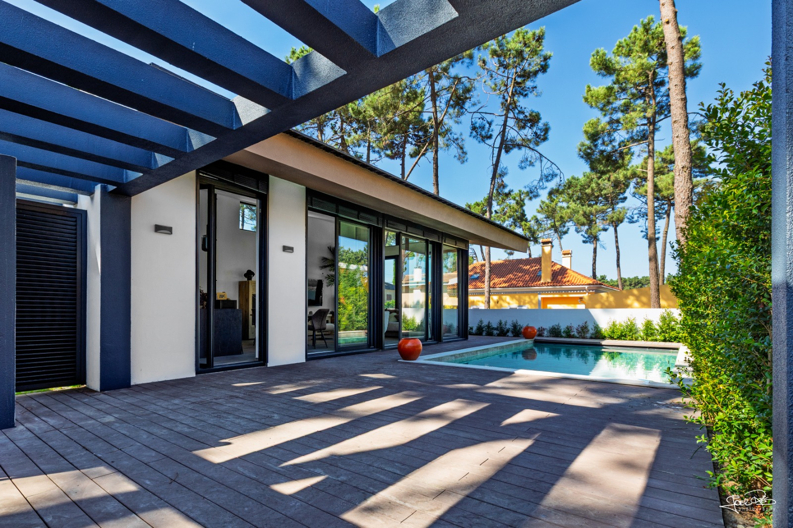

Desenvolvemos o projeto completo de arquitetura para a sua moradia — desde o primeiro esquisso até à entrega da obra. Um processo claro, com acompanhamento total e sem surpresas.
Não fazemos apenas o projeto — acompanhamos todo o processo para que a sua moradia seja exatamente o que imaginou, dentro do prazo e do orçamento.
Desenvolvimento completo — plantas, cortes, alçados, memórias descritivas e peças desenhadas para licenciamento e obra.
Tratamos de todo o processo na câmara municipal — pedido de informação prévia, projeto de licenciamento e acompanhamento até aprovação.
Acompanhamento técnico em obra para garantir que a execução respeita rigorosamente o projeto aprovado.
Especialistas em habitações em estrutura de madeira — projeto, especialidades e licenciamento para construções modernas e sustentáveis.
Recuperação e modernização de habitações existentes, com projeto de alteração e atualização energética.
Modelação e coordenação em BIM para projetos de maior complexidade — maior rigor, menos erros em obra.
Cada projeto é desenvolvido à medida — adaptado ao terreno, ao cliente e ao estilo de vida de quem vai viver lá.




Um processo estruturado e transparente — sabe sempre o que está a acontecer e o que vem a seguir.
Conhecemos profundamente as câmaras municipais da Grande Lisboa, os regulamentos locais e as especificidades de cada município. Isso traduz-se em menos surpresas e projetos aprovados mais depressa.
Almada, Seixal, Sesimbra, Palmela, Cascais, Sintra e toda a AML.
Projeto, licenciamento, especialidades e obra — tudo no mesmo gabinete.
Acompanhamento próximo em cada fase — sem intermediários, sem demoras.
"Desde o primeiro esquisso até à entrega das chaves, a equipa esteve sempre presente. O resultado superou todas as expectativas. A nossa moradia é exatamente o que sonhámos."
"Tínhamos um terreno difícil em Sesimbra e outros arquitetos desistiram. A PO Arquitetos apresentou uma solução criativa e tratou do licenciamento de início ao fim. Profissionais a sério."
"Escolhemos a PO Arquitetos para reabilitar a nossa casa antiga. O projeto ficou fantástico — moderna por fora, confortável e eficiente por dentro. Voltaria a contratar sem hesitar."
Conte-nos a sua ideia — analisamos o terreno, o programa e os objetivos, e apresentamos as possibilidades sem qualquer compromisso.
Entraremos em contacto em até 24 horas úteis.
As questões que nos colocam mais vezes antes de avançar.